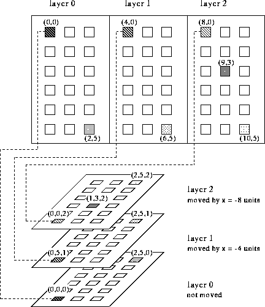

The z-values of the different units can be displayed in the 2D-display. To do this, the user activates the setup panel of the 2D-display with the button

. The button , next to the entry units top opens a menu where
z-value allows the display of the values.
, next to the entry units top opens a menu where
z-value allows the display of the values.
The z-values may also be displayed in the 3D-display. For this, the
user selects in the 3D-control panel the buttons  ,
then
,
then  or and finally
or and finally
 . (see also chapter
. (see also chapter  )
)